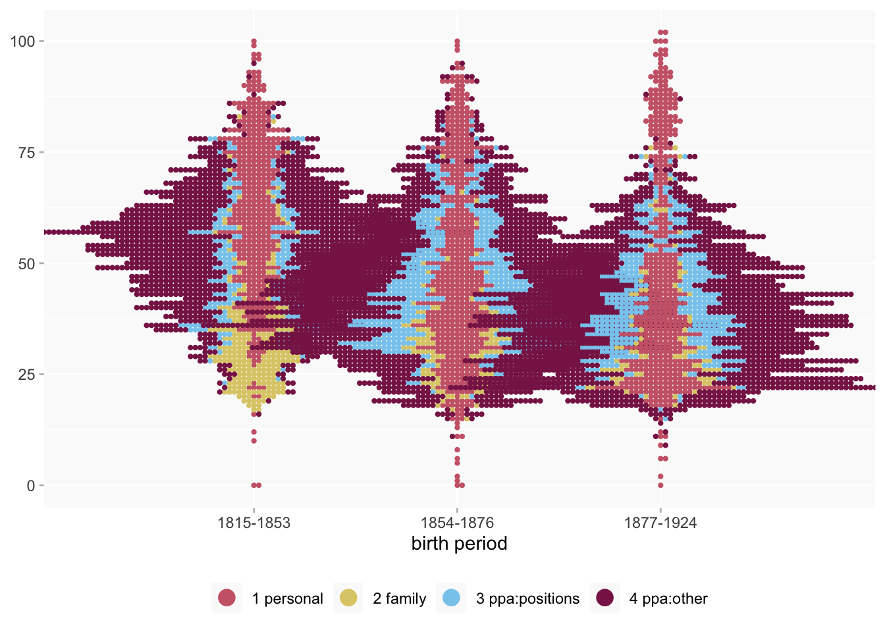

Work in progress: notes on dates
dates
Why are dates so hard?
Wikibase queries
See the Dates section of the example queries.
Experimental visualisations
Beeswarm plots of activity by age
- every date is a single point
- split women up into three groups by birth date between 1825 and 1924 (there are very few women before/after those dates)
- I’ve adjusted the dates for even size groups rather than equal periods
- only includes women who have both birth and death dates
This is considerably simplified from the first version…
- I’ve taken out death as well as birth to (I may put women without death dates back in; it’ll depend how many data points that adds)
- I’ve dropped resided at dates and a small number of miscellaneous categories so that it’s easier to focus on four main groups of activities:
- personal
- marriage/family
- work/employment activities
- other public and professional activities
An interactive version
Usage:
- hover over points for more info in tooltips (todo: other info in the tooltips)
- single-click items in the legend to toggle them off and on individually
- double-click items in the legend to toggle off/on all the others (this one seems a bit temperamental sometimes but it does work)
(Eg double-click on exhibited at for a nice contrast, or on publication for a reminder about the incompleteness of some of our data.)
Legend notes:
- some property names shortened for labels
- some pairs of properties (EDTF/PIT or item/text) consolidated into single categories
- some ppa:other properties also merged into single categories to make them more manageable, and smaller groups into a single “other”
Notes on some of the complexities
general concepts
Broadly the main issues are variability in a. precision, b. certainty, c. formatting and d. omission rates.
Dates are a problem for just about everyone who has to work with them, whether historians or data people. (Sometimes the way that software attempts to deal with the problem makes them a problem for everyone else as well, such as the notorious eagerness of spreadsheet software to convert into date format anything that even remotely resembles a date.)
wikibase structure and variety
Dates may be recorded as “main” (or top level) values or qualifiers, which need to be queried separately.
The majority of dates are qualifiers, and there are around 50 different properties for events or activities that might have qualifier dates. That is a lot of categories to try to analyse or visualise together.
Then there are several different possible date properties
datatypes and technical constraints
Main level dates may have one of two different datatypes: Time (ymdHMS format), which is the built-in Wikibase datatype, or EDTF (Extended Date/Time Format) for “fuzzier” dates. Qualifier dates (so far…) only have the Time datatype.
- Time dates are always stored and exported by the wikibase (and handled by R) in a year-month-day format, even if they’ve been recorded at a lower level of precision (eg year only); the precision level is stored separately and has to be specifically queried. (A year-only date, for example, is stored as YYYY-01-01, so without the precision level it’s impossible to differentiate it from an actual 1 January date.)
- EDTF dates are exported as text strings which need to be converted to dates separately. So far they’ve been used in a fairly straightforward way, mirroring the precision levels for Time dates, but they could be much more complex including uncertainty, approximation, date ranges, etc. [This comment is not intended as encouragement.]
If I run a basic union query in the WQS combining Time/EDTF dates in one column, the EDTF dates will be automatically simplified and converted to the same format as Time dates. So if I want to retain the extra information I have to separate out those variables and then re-combine them after processing.
varying precision/certainty in sources and recording them
For qualifier dates there are five different properties which reflect different ways that dates might have been recorded, or degrees of certainty in interpreting them: point in time; start time; end time; earliest date; latest date.
- a pair of start time and end time represents a period of time
- but often only one of start/end is recorded
- point in time may represent either a discrete short term event or simply a known recorded moment in a longer duration
- it looks as though latest date can be very imprecise
- (and presumably earliest can be too, though I think there aren’t many of them)
Dates may not be recorded at all, and some dates are more likely to be recorded than others.
A date might be missing because it really is completely unknown, or because the project doesn’t have time and resources to track down everything (!), or because some sources are work in progress, or simply because of technical issues fetching the data (eg The Bug).
data issues
There are occasional apparent inconsistencies in usage on the wikibase which can be difficult to interpret (ie, they could be errors but equally they could be deliberate choices to handle unusual cases): eg at time of writing there is one date for the property married name (for Olwen Brogan) and it’s not clear why this isn’t recorded as married in. [Update: this particular example has now been fixed.] I’d emphasise that such inconsistencies seem rare and minor problems.
Occasionally there may be more than one recorded date to choose from (apart from start/end pairs), though I think there are fewer of these now than there were a few months ago. I think this might tend to occur because an event was recorded with different precision/certainty in different sources, so deciding which of the two dates to use (whether by editing the wikibase or filtering one out at the analysis stage) can be a choice between precision and certainty. Most I’ve seen are in the same year, in which case it’s a minor issue.
(Annoyingly, some sparql queries return duplicates, which is a very different data problem from having multiple dates in a statement… but not necessarily immediately obvious to tell apart.)
Table
This should contain every recorded date for every woman who has both birth and death dates… hopefully in the correct chronological order.
Start and end times in the same year may not currently always be correctly sorted. More generally, it can be difficult to ensure that dates in the same year but with low or different precision levels come out in the desired order (or even to decide what the desired order in those cases should be).
A year-only date should display as 01/01/year but in some cases below the software package used to render the table is displaying them as 31/12 of the previous year, and I have no idea why: the underlying data is fine. (It may only affect certain dates.) I’ll work out how to fix it.